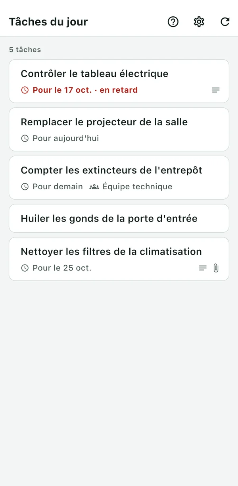
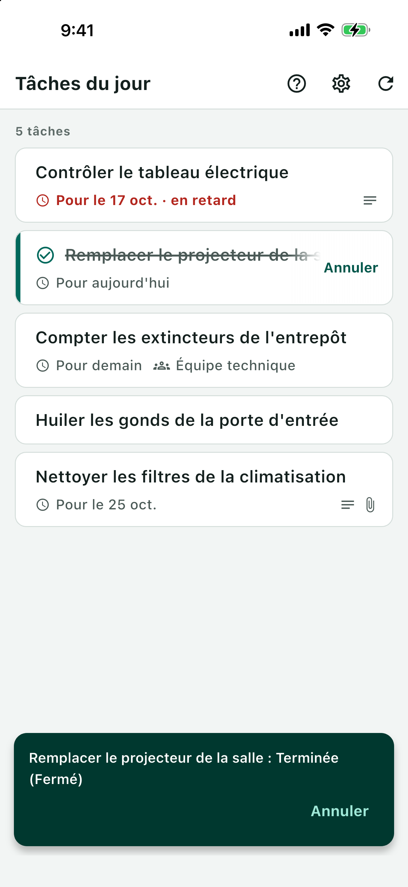
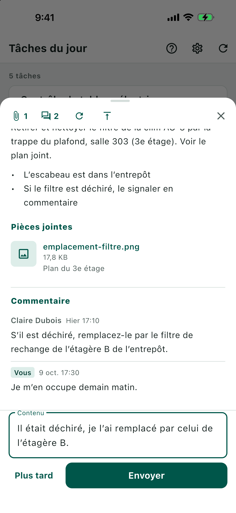

Consultez les tâches qui vous sont attribuées.
Retrouvez les tâches en cours attribuées à vous-même ou à votre groupe. Ouvrez une tâche pour lire sa description et consulter les images jointes.

Vous attendez de revenir à votre ordinateur pour mettre Redmine à jour ? Avec BeatMine, faites-le depuis votre smartphone dès que le travail est terminé. Partagez votre avancement avec l’équipe et faites avancer le projet.
Utilisation gratuite
Pour iPhone · iOS 15 ou version ultérieure

Compatible avec Redmine 6.0 / 6.1 / 7.0 · Conditions de connexion
Si les mises à jour de Redmine attendent votre retour à l’ordinateur, faites-les directement sur place. BeatMine enregistre les tâches terminées et les commentaires dans votre Redmine habituel. Votre équipe les retrouve comme d’habitude.
Vérifiez les détails.
Puis mettez la tâche à jour sur place.
Retrouvez les tâches en cours attribuées à vous-même ou à votre groupe. Ouvrez une tâche pour lire sa description et consulter les images jointes.

Une fois le travail terminé, faites glisser la tâche vers la droite. L’écran vous indique si la mise à jour a été transmise à Redmine.
Signalez une pièce remplacée ou laissez des précisions à la personne suivante. Votre commentaire est enregistré dans l’historique de la tâche dans Redmine.
Les informations des tâches circulent directement entre votre iPhone et votre Redmine. Nous ne collectons pas les données de vos tâches. Votre clé d’API est conservée dans le stockage sécurisé de votre appareil.
Politique de confidentialité →Connectez-vous au Redmine que votre équipe utilise déjà. Si vous ne savez pas si son API REST est activée, contactez votre administrateur Redmine.
Selon les paramètres de votre Redmine, la connexion ou certaines opérations peuvent ne pas être disponibles.
Conditions de connexion et limitations →Utilisation gratuite
Pour iPhone · iOS 15 ou version ultérieure
